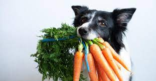

Carrots

- Carrots are a healthful food for dogs. Chewing on carrots can help remove plaque from their teeth and otherwise promote good dental health. Carrots are also a good source of vitamin A, which is beneficial for a dog’s immune system, skin, and coat.
Apples
- Apples provide many important vitamins for dogs, including vitamins A and C. Apples are also a good source of fiber, which can help regulate a dog’s digestion. However, eating rotting apples can lead to alcohol poisoning in dogs.
White rice
- Cooked, plain white rice can be a good option for a dog with an upset stomach, as it is easy to digest and helps bind stool. White rice can cause blood sugar levels to rise, however, so dogs with diabetes should only eat it in small amounts
Dairy products
- Dairy products, such as milk, cheese, and plain yogurt, are safe for dogs to have in very small quantities. Eating too much dairy can cause digestive problems. This is because dogs have low levels of lactase, a digestive enzyme that breaks down the sugars in milk. Dogs with lactose intolerance should not eat dairy products. Signs of lactose intolerances include diarrhea or vomiting after consuming anything that contains dairy.
Fish
- Salmon, shrimp, and tuna are all safe for dogs to eat and good sources of protein. Salmon and tuna are rich sources of omega-3 fatty acids, which can help keep a dog’s immune system, coat, and skin healthy. The B vitamins in shrimp can also help maintain a dog’s digestive system and promote healthy blood circulation. It is important to cook fish before feeding it to a dog, as uncooked fish can contain harmful parasites.
Chicken
- Plain, boiled chicken with no seasoning is a good option when a dog has an upset stomach.
Peanut butter
- Unsalted peanut butter with no added sugar or sweeteners is safe for dogs to eat in moderation. Peanut butter contains many beneficial elements, including vitamins E and B, niacin, healthful fats, and protein. However, it is vital to check that the peanut butter does not contain a sweetener called xylitol, which is highly toxic to dogs. Anyone who suspects that their dog has ingested xylitol should immediately contact a veterinarian or call an Animal Poison Control Center.
Plain popcorn
- Plain popcorn, without salt, butter, or sugar, can be a nutritional treat for dogs. Popcorn contains minerals such as magnesium, phosphorus, and zinc, which are all important for keeping dogs healthy. Make sure dogs do not eat any unpopped popcorn kernels, as this could cause them to choke.
Pork
- Unseasoned, cooked pork is safe for dogs to eat. However, they should only consume small portions of pork, as the high fat content is hard for dogs to digest, and it can cause inflammation and pancreatitis. Refrain from feeding dogs bacon or processed ham, due to the high salt contents.
Turkey
- Cooked turkey is safe for dogs to eat, but it should be plain and unseasoned. Many commercial dog foods contain turkey, as it is a good source of protein. Before giving cooked turkey to a dog, remove the fat first. Too much fat can cause pancreas issues in dogs.
Blueberries
- Blueberries are safe for dogs to eat and a rich source of fiber, antioxidants, and phytochemicals, which can provide a range of health benefits for dogs. ResearchTrusted Source from 2012 suggests that antioxidants may help improve age-related issues in older dogs.
Bananas
- Dogs can eat bananas in moderation. They are full of magnesium, which is important for good bone health. Due to their high sugar content, bananas should only be an occasional treat for dogs.
Cucumbers
- Cucumbers are a safe, low-calorie snack for dogs, and they can be a good option for those who are overweight. Cucumbers also contain plenty of vitamins and minerals, such as vitamin K.
Green beans
- Plain green beans are a good, healthful snack for dogs. They are a source of protein and also contain calcium, iron, and vitamin K. Dogs can eat green beans cooked or raw. However, avoid seasoning and chop up the beans first to prevent choking.

Watermelon
- Watermelon is safe for dogs to eat, but it is important to remove all the seeds first, as these can block the intestines. Chewing on the rind can also cause an upset stomach, so remove this too before giving the watermelon to a dog. Watermelon has a high water content, so it can help keep dogs hydrated. It is also a good source of vitamins A, C, and B-6.